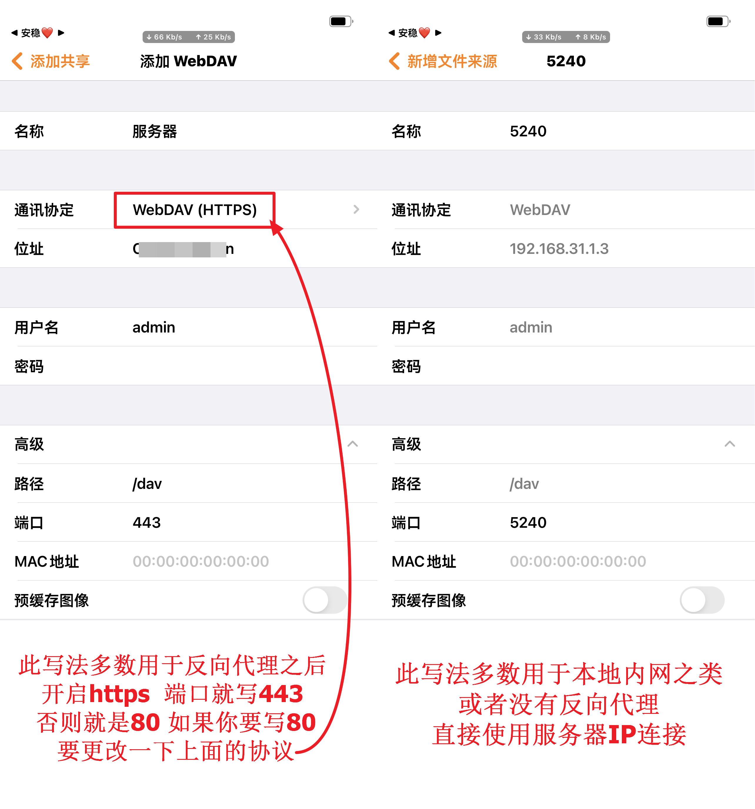
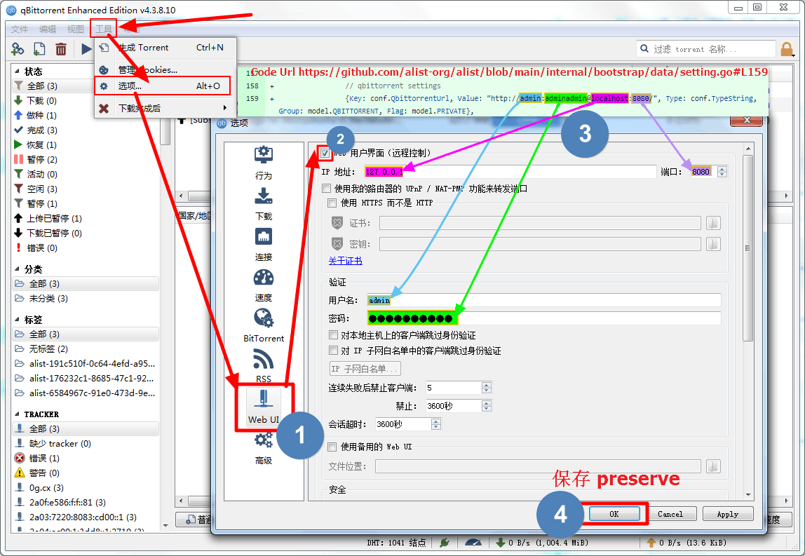

聚合盘这么多，为什么我还在用 alist
把 alist 放进同类工具的坐标系里看：它凭什么在多网盘聚合这个赛道站稳脚跟，又在哪些场景下会让你皱眉。
网盘聚合这个赛道，已经被做得很挤了。大厂自己出过全家桶、民间有各种挂载方案、NAS 自带远程文件夹功能也越来越好用。但 alist 从 v2 走到 v3 还在活跃迭代，说明它确实解决了一类用户没被满足的需求——就是那种手里同时攥着三四个网盘账号、想把它们当成一个来用、又不想折腾一堆零散工具的人。
同类里它站在哪
同类工具大致分三档：第一档是系统级方案，比如 rclone 配合 mount 把远程目录挂成本地盘符，灵活性高但门槛也高，写配置就劝退不少人；第二档是各平台自带的远程挂载，群晖 DSM 有 WebDAV、Windows 有映射网络驱动器、各家播放器也有自家的网盘接入，分散在不同软件里互相不搭；第三档就是 alist官网 上主推的这种「一个入口管所有」的聚合层——浏览器打开、点几下就能把网盘挂进来，还能同时对外出 WebDAV、跑离线下载、给家人开账号。
alist 不是第一个做聚合的，但它在「轻量化 + 功能完整度」的那个点上卡得特别准。它就是比那些功能更花但动辄几百 MB 的方案更轻、又比只做挂载的最小化工具多了一整套实用功能。
三个别家没有的点
权限位精细到让你意外
如果你想给老婆开个账号只让她看某几部片、想给朋友开个账号让他往某个目录传文件但不许改名、想停用访客模式强制所有人登录——这些在别的工具里可能要手动改目录属性或者用 ACL 写规则，在 alist 里就是后台勾选。内置的 guest 账号、每个用户一组独立权限位、元信息再叠一层目录级权限，两层组合下来能把可见范围和可操作粒度卡得很死。给家人开账号的时候我只勾基本读取 + 可以看到隐藏目录，WebDAV 读取按需加上——不用写一行命令就能把权限锁得明明白白。
WebDAV 一站式出去
很多人装 alist 就是冲这个来的：把七八个网盘挂进来之后，一键对外暴露 /dav 端点，然后所有支持 WebDAV 的软件——播放器、笔记软件、NAS 远程挂载——直接连这一个地址就行，不用挨个挂每个网盘。Infuse、NPlayer、PotPlayer、ES 文件管理器，填地址（站点 + /dav）、用户名密码就能用，播放器那边选好源直接出文件列表，笔记软件把 WebDAV 当同步后端一聚合盘秒变笔记仓库。v3.42.0 之后权限位又加了 WebDAV 专属的读取和管理两档，更细了。

离线下载把外部工具串起来
Aria2、qBittorrent、甚至 115 和 PikPak 自家的离线通道，alist 的后台只需要填一次地址和密钥，前端右下角的磁铁按钮就能直接往这些通道丢磁力、http、ed2k 链接。下载完自动落到临时目录再进目标网盘，整个过程用户侧不用关心。qBittorrent 的默认预设值就是本机 8080、账号 admin、密码 adminadmin——如果你用的是官方完整版直接填就行，绿色版或魔改版反而容易报 not ready 或 parse timeout，换官方包就好。

它为这些优势付出的代价
要说 alist 什么都好那是不负责任的——它的取舍很明确。
多网盘挂载的配置成本是真的高。每个网盘都要 OAuth 授权、填 refresh token、有时候还要指定根目录 ID，新接一个网盘可能要翻 alist文档 半天。不像大厂自家的网盘客户端装完就能用。而且从官方下载拿新版时要注意，v2 到 v3 是不兼容的大版本跨越，数据不能互通，存的东西要全部重新添加——升级前必须把程序目录下的 data 文件夹整个拷出来备份，停服务再升级，不能硬替换二进制。
离线下载依赖外部工具也不算省事。Aria2 要单独跑、qBittorrent 要保持在线、Docker 用户还要记得把临时目录映射到宿主机，不然下载完找不到文件。相比之下某些大厂方案自带离线能力，装完就能用。
还有一点值得提的是权限位和元信息的两层配置容易搞混。用户级的权限位控制「这个人能做什么」，元信息里的「写入」「隐藏」控制「这个目录对所有角色开放什么」——给朋友开账号之前最好先理清楚两层各勾了什么，不然出现「明明勾了写入却传不上」的情况就得回去查配置。
选购结论
如果你手里网盘账号超过三个、想把它们当成一个统一入口来用、还想顺便对外出 WebDAV 给播放器和笔记软件连——alist 基本上是当前最省心的选择。它的轻量化意味着你可以在一台小主机上 Docker 跑起来，几分钟上线。
如果你只有一个网盘、或者用的是某个大厂全家桶、不需要聚合也不需要 WebDAV，那 alist 可能反而是额外复杂度——直接用官方客户端或播放器内置的网盘接入就够了。如果你需要极致的挂载灵活性、愿意写 rclone 配置，那 rclone 配合 mount 的功能上限更高，但那是另一个赛道的玩家了。
一句话总结：手里盘多、想省事、想对外出 WebDAV 的，alist 值得试；单一网盘刚需、不想折腾配置的，绕道。如果你想深入研究它的实现或者自己部署一份，可以在 GitHub 上拿到完整源码，国内网络不畅时 Gitee 和 GitCode 也有同步镜像。